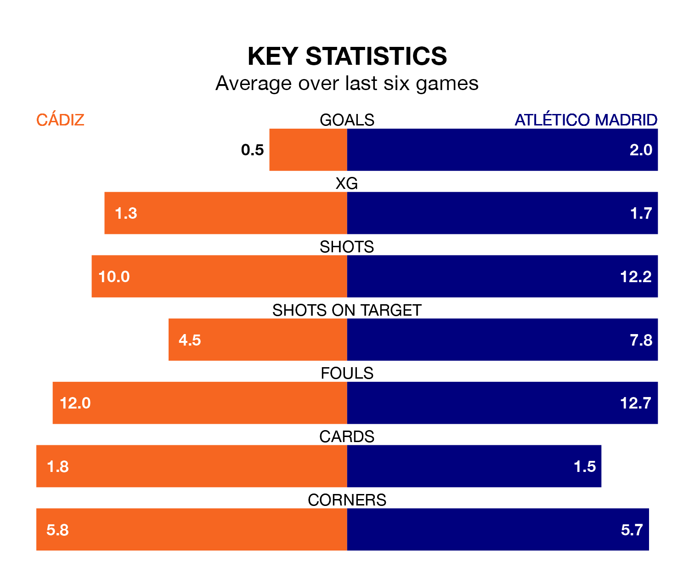

Relegation candidates Cádiz face a challenge against high-flying Atlético Madrid at the Estadio Nuevo Mirandilla on Saturday.
Cádiz are 18th in the La Liga table, and have picked up just two wins and 13 draws in their 27 games to date.
Atlético, meanwhile, are fourth in the standings with 55 points, having won 17 and drawn four, and are 11 points behind table-toppers Real Madrid.
With 54 goals in 27 games so far this season, Atlético are scoring more than average in the league with 2.0 goals per game. And they are conceding fewer than average, letting in 29 goals at a rate of 1.1 per game.
Cádiz, meanwhile, are below average scorers, with 0.7 goals per game, compared to a league average of 1.3. They have conceded 1.4 goals per game.
In the last 10 years, Cádiz and Atlético have played each other on eight occasions. Cádiz won one of them and Atlético the other.
On average, Cádiz scored 1.4 goals and Atlético 3.5 in those matches.
Their last meeting was on October 1, when Atlético won 3-2 at home.
In Alvaro Morata, the away team have one of the league's most on-form strikers so far this season. He has notched 14 goals in 24 appearances, to sit third in the scoring charts.
His goal rate of one every 113 minutes is much quicker than that of Chris Ramos, the hosts' top scorer with a goal every 393 minutes, and a total of five goals in 27 games.
Cádiz are in bad form in La Liga, with no wins and four draws from their last six games.
With three wins and two draws over that period, Atlético's form is much better – they have taken 11 points from 18, compared to Cádiz's four.
Cádiz's last match was on March 2, a 1-1 draw against Rayo Vallecano, with Javi Hernández getting the goal for Cádiz.
Atlético beat Real Betis 2-1 last time out, on Sunday, with Morata Martín and Rui Silva (own goal) on the scoresheet.
Saturday's match will be refereed by Pablo González Fuertes, who has taken charge of 15 La Liga games so far this season, issuing five red cards and booking 65 players. He has awarded six penalties.
The last Cádiz game González Fuertes refereed was a 0-0 away draw with Villarreal on February 4. He is yet to oversee a match featuring Atlético this season.
Updated: 09:34 (UTC), 08/03/24